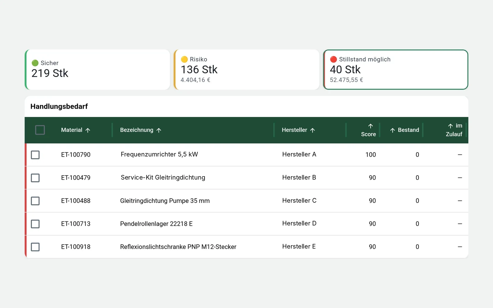

Analyse & Optimierung
Erst verstehen. Dann entscheiden.
Bevor Sie investieren, beschaffen oder migrieren, prüfen wir Daten, Bestände und Abläufe. Sie erhalten eine klare Grundlage für die nächsten Schritte.
Analyseleistungen
Vier Wege, Klarheit zu schaffen.
Der Quick-Check ist der breite Einstieg. Die übrigen Analysen gehen gezielt in die Tiefe – bei Material, im Lager oder vor einer Systemumstellung.
Quick-Check Betrieb & Digitalisierung
Risiken und Potenziale mit gewähltem Schwerpunkt erkennen.
Material- und Ersatzteilanalyse
Bestände, Kritikalität und Datenqualität bewerten.
Digitaler Lageraudit
Mobile Bestandsaufnahme direkt am Lagerplatz.
ERP Migration Readiness
Material- und Ersatzteildaten vor der Migration ordnen.
Material- und Ersatzteilanalyse
Wissen, welches Material zählt.
Wir werten Ihre Material- und Ersatzteildaten aus und machen sichtbar, wo Kapital gebunden ist, wo Versorgungslücken drohen und wo Daten fehlen.
- Bestandsrisiko und Kapitalbindung
- ABC/XYZ-Verteilung
- Kritikalität für Anlagen und Betrieb
- Datenqualität, Dubletten und Datenlücken
- Lieferzeiten und Lieferantenabhängigkeit
Ausprägung: Ersatzteil-Risikocheck
Eine Materialliste. Klare Risiken.
Der Ersatzteil-Risikocheck ist eine fokussierte Form der Analyse. Wir prüfen eine Materialliste gezielt auf:
- Kritische Teile
- Nullbestand
- Lange Lieferzeit
- Single Source
- Fehlende Hersteller- oder Artikelinformationen
- Fehlende Alternative
- Hohe Kapitalbindung

Digitaler Lageraudit
Was liegt wirklich im Regal?
Mobile Bestandsaufnahme direkt im Lager. Jeder Lagerplatz wird strukturiert erfasst – als Grundlage für saubere Daten und gezielte Maßnahmen.
Erfasst wird
- Material vorhanden
- Menge
- Lagerplatz
- Kennzeichnung
- Hersteller
- Artikelnummer
- Dublettenhinweis
- Schäden
- Obsoleszenz
- Kritikalität
Das Ergebnis
Aus der Aufnahme entsteht eine belastbare Datenbasis und eine Maßnahmenliste.
- Bestandsaufnahme
- Datenbasis
- Maßnahmenliste
ERP Migration Readiness
Erst die Daten ordnen. Dann migrieren.
Eine Systemumstellung überträgt auch alte Fehler. Wir bereiten Ihre Material- und Ersatzteildaten so vor, dass sie sauber in das neue System übergehen.
Leistungsumfang
- Datenanalyse
- Datenbereinigung
- Harmonisierung
- Klassifikation
- Dublettenbereinigung
- Mapping-Vorbereitung
- Export- und Importvorbereitung
- Plausibilitätsprüfung
- Fachliche Begleitung der Material- und Ersatzteildaten
Geprüfte Felder
- Pflichtfelder
- Dubletten
- Hersteller
- Artikelnummer
- Typenbezeichnung
- Klassifikation
- Einheiten
- Lieferanten
- Preise
- Lagerbestände
- Altmaterialien
Fachkontexte
Typische Quell- oder Zielsysteme sind SAP PM/MM, Maximo, Infor oder IFS.
Unsere Leistung umfasst Daten und Prozesse. Die Implementierung oder das Customizing eines ERP-Systems gehört nicht dazu.
Der erste Schritt
Welche Analyse passt zu Ihrer Frage?
Schildern Sie uns die Ausgangslage. Wir empfehlen den passenden Einstieg – breit mit dem Quick-Check oder gezielt in einem Bereich.
- Telefon+49 160 277 65 12
- E-Mailservice@werringloer.de
- StandortPeetzweg 46, 38228 Salzgitter